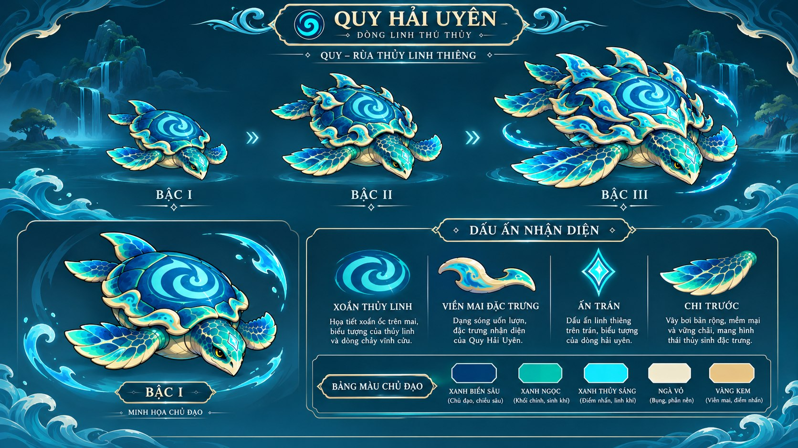
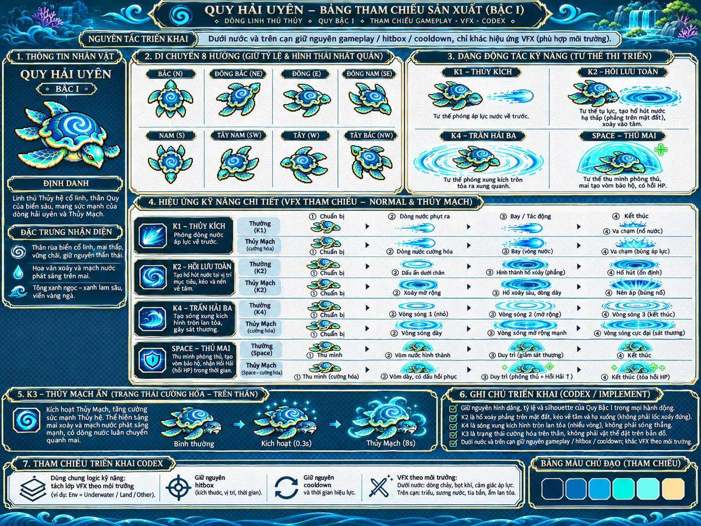
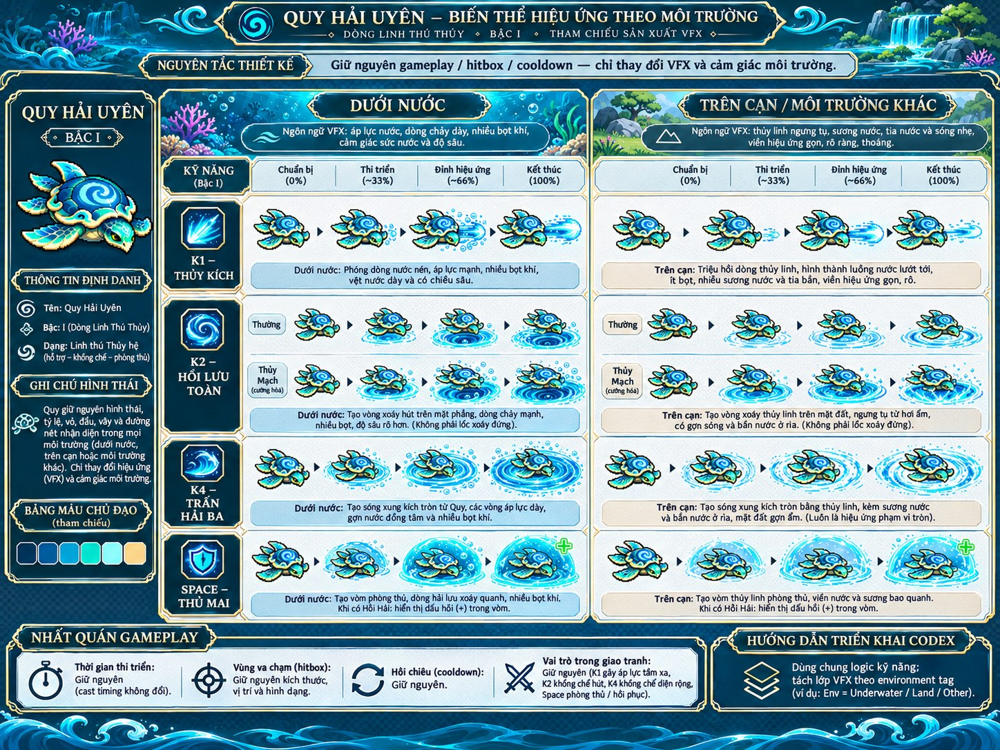
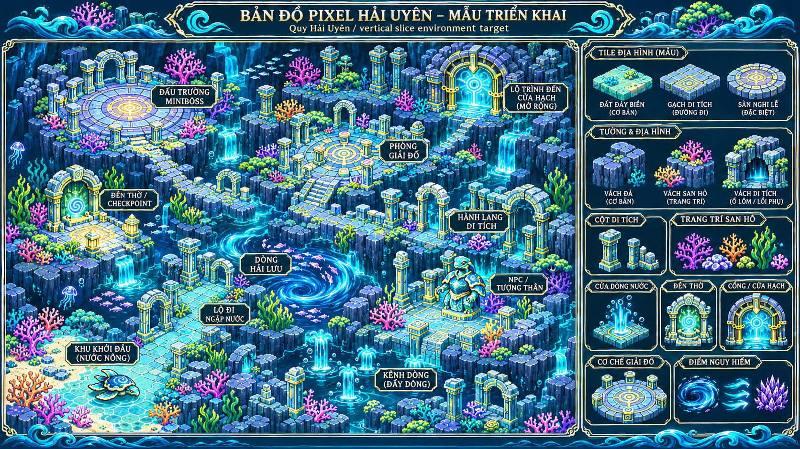
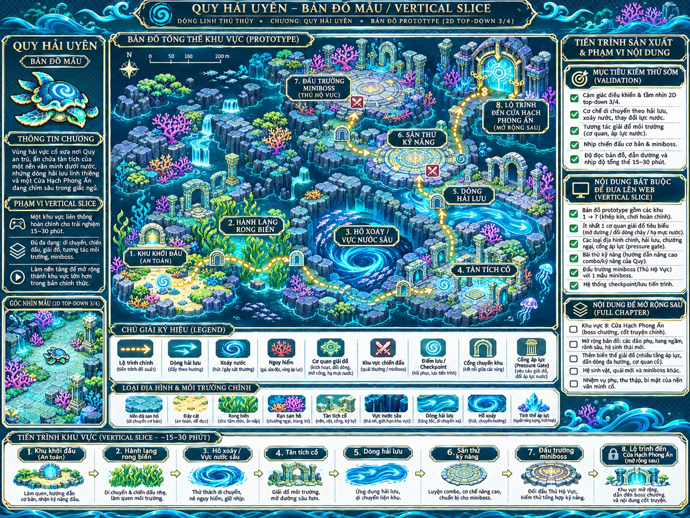
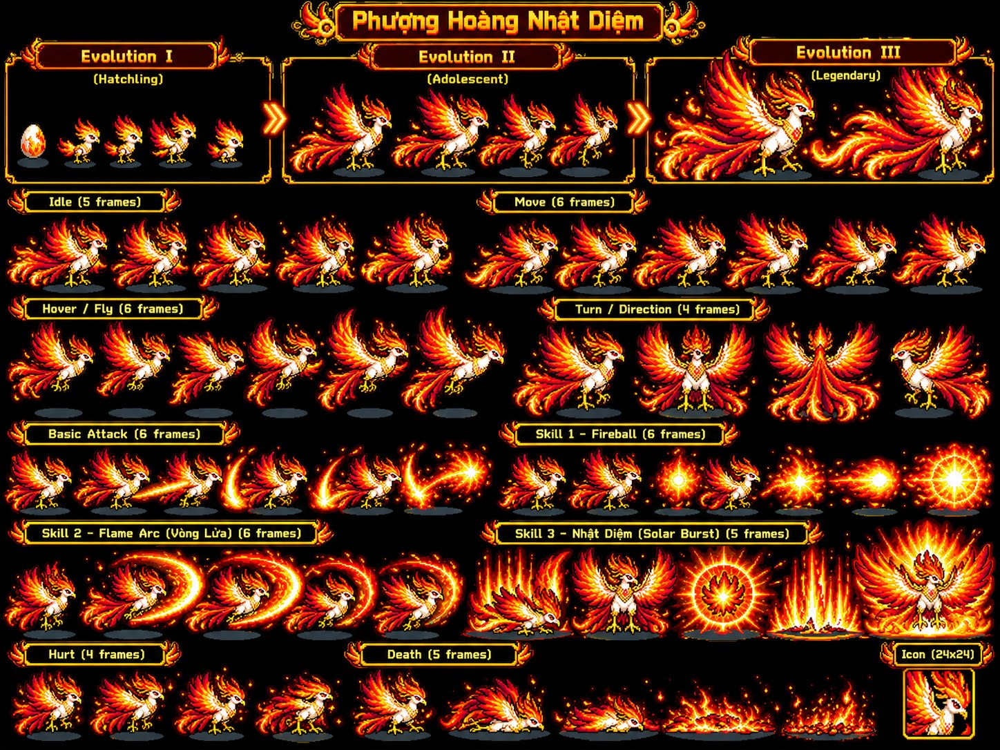
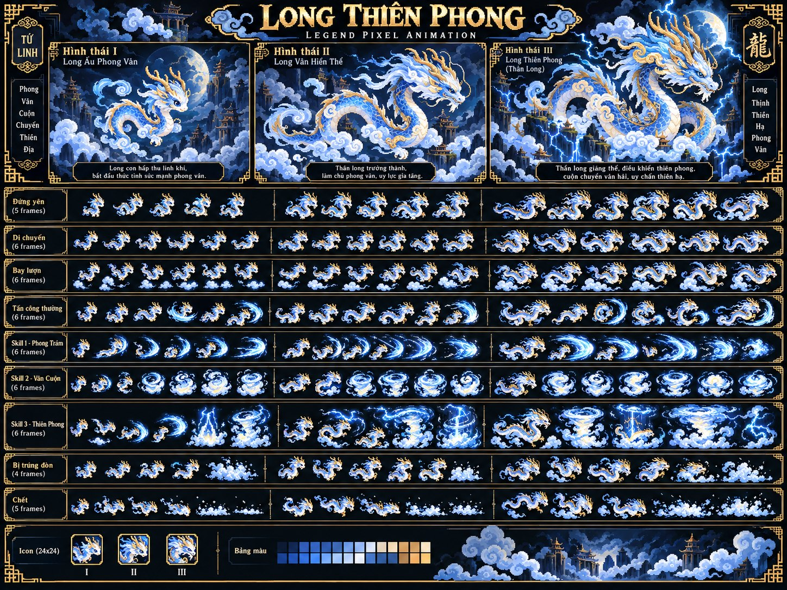
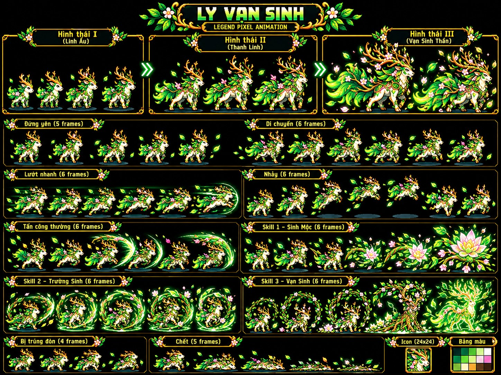
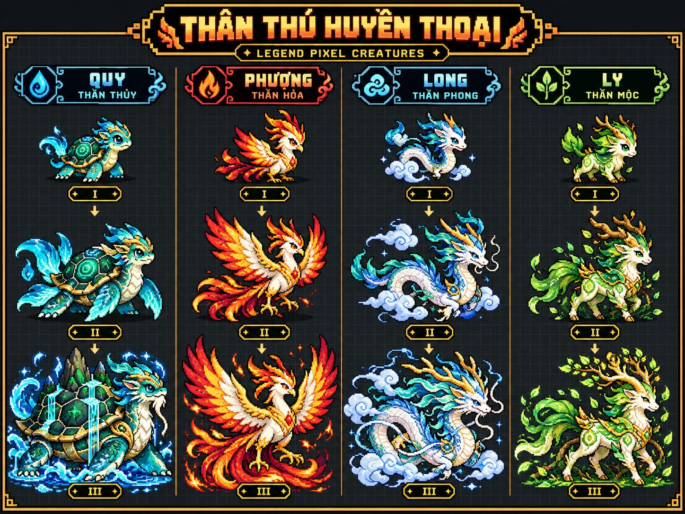
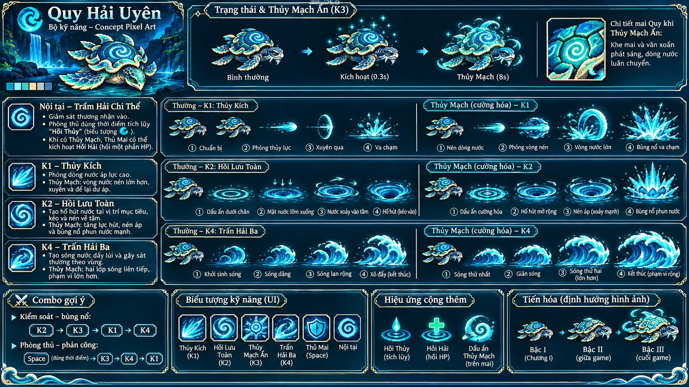

Quy Hải Uyên — Thiết kế 3 bậc
canon reference
Ảnh tham chiếu (concept) đã được tối ưu kích thước để xem trên web. Không coi đây là các sprite/tileset đã sản xuất hoàn chỉnh.

canon reference

poses reference only

VFX reference only

map concept

layout concept

future beast reference

future beast reference

future beast reference

group concept

skill reference
Ảnh tải nhanh là JPEG tham chiếu. PNG gốc và tài liệu được giữ trong gói kiểm kê trước; không dùng ảnh này làm sprite RGBA.